Character Archive

Bruce (Within the Woods)
Bruce is one of the original victims of the supernatural evil in Within the Woods (1978). After disturbing an ancient burial site connected to the spirit Tinga, Bruce becomes possessed and transformed into the first known Deadite-like victim of the franchise.

Ellen (Within the Woods)
Ellen is Bruce's girlfriend in Within the Woods (1978). She becomes caught in the terrifying events surrounding the awakening of the ancient evil and represents one of the earliest characters in Evil Dead history.

Scotty (Within the Woods)
The Scotty from Within the Woods is a separate prototype character and is not the same character as Scotty from The Evil Dead (1981). He is one of the original group members who encounter the evil force connected to Tinga.

Shelly (Within the Woods)
Shelly is Scotty's girlfriend in Within the Woods (1978). She is one of the four original characters from the short film that laid the foundation for the Evil Dead mythology.
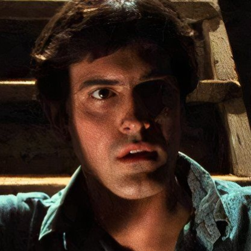
Ashley Williams
Ash Williams is the central hero of the Evil Dead universe. Originally a normal man visiting the Knowby cabin with his friends, Ash becomes humanity's greatest defender against the forces unleashed by the Necronomicon Ex Mortis. His battles with the Deadites eventually transform him into the legendary hero known as El Jefe.
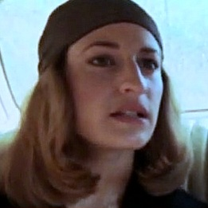
Cheryl Williams
Cheryl Williams is Ash's sister and one of the first victims of the Necronomicon in The Evil Dead (1981). After the Book of the Dead is awakened, Cheryl becomes possessed by the Kandarian Demon and begins the nightmare at the cabin.
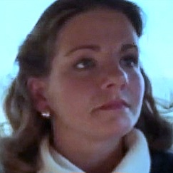
Linda
Linda is Ash Williams' girlfriend who travels with him to the Knowby cabin. After the Necronomicon unleashes its evil, Linda becomes possessed and becomes one of Ash's earliest and most tragic encounters with the Deadites.
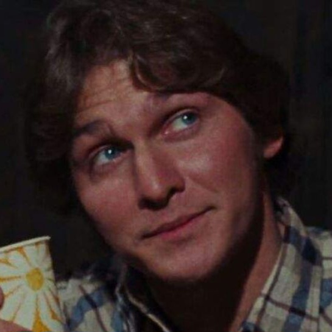
Scotty (The Evil Dead)
Scotty is Ash's friend and one of the original group members who travels to the Knowby cabin. This Scotty is separate from the prototype character seen in Within the Woods (1978). After witnessing the horrors unleashed by the Necronomicon, Scotty struggles to survive against the Deadites.
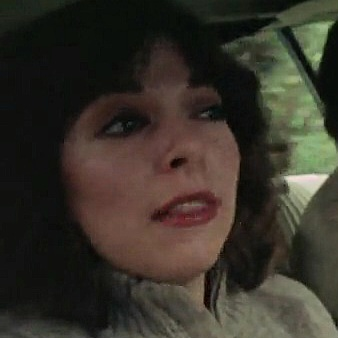
Shelly (The Evil Dead)
Shelly is Scotty's girlfriend in The Evil Dead (1981). After the Kandarian Demon is released, she becomes possessed and attacks Scotty before he is forced to destroy her.
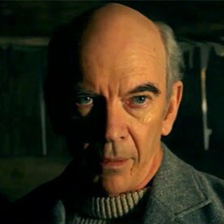
Professor Raymond Knowby
Professor Raymond Knowby is the archaeologist who discovers the Necronomicon Ex Mortis and records his translations of its passages. His research accidentally unleashes the Kandarian Demon upon those who later visit the cabin.

Annie Knowby
Annie Knowby is Professor Raymond Knowby's daughter. She returns to the cabin searching for her father's lost research and becomes one of Ash's greatest allies during the events of Evil Dead II.
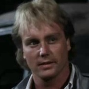
Ed Getley
Ed Getley is a researcher who accompanies Annie Knowby to the cabin. After reading from the Necronomicon, he becomes possessed and transforms into a Deadite.
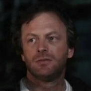
Jake
Jake travels to the cabin with Annie and Ed. Although he initially distrusts Ash, he eventually becomes caught in the battle against the supernatural forces unleashed by the Necronomicon.
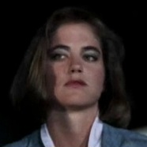
Bobby Joe
Bobby Joe arrives at the cabin with Jake and becomes another victim of the evil surrounding the Necronomicon. Her encounter with the Kandarian forces leads to one of the film's most memorable moments.
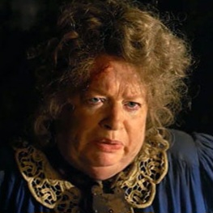
Henrietta Knowby
Henrietta Knowby is Professor Knowby's wife. After her corpse is discovered beneath the cabin, the Kandarian Demon resurrects her as a grotesque Deadite creature that battles Ash.
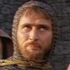
Lord Arthur
Lord Arthur is the ruler of a medieval kingdom during Ash Williams' journey through time. Initially viewing Ash as an enemy, Arthur eventually becomes an important ally in the fight against the Deadite army.
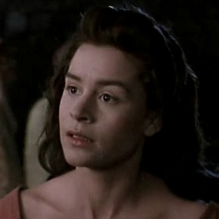
Sheila
Sheila is a villager from Arthur's kingdom who becomes close to Ash during his time in the medieval world. After being possessed by the evil forces connected to the Necronomicon, she is transformed into a Deadite before Ash saves her.
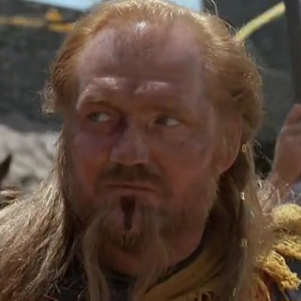
Duke Henry the Red
Henry the Red is a powerful warrior and ruler of the lands north of Arthur's kingdom. After initially being imprisoned by Arthur, he joins forces with Ash during the final battle against the Army of Darkness.

The Wise Man
The Wise Man is the keeper of ancient knowledge who explains the prophecy surrounding Ash's arrival. He reveals the importance of the Necronomicon and guides Ash in his quest to return home.
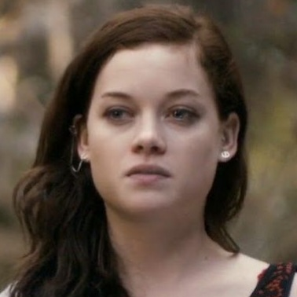
Mia Allen
Mia Allen is a recovering drug addict who travels to an abandoned cabin with her friends and brother David. After the Necronomicon is discovered and read, Mia becomes possessed by a Kandarian force. Despite suffering extreme torment, she manages to overcome the evil and survive.
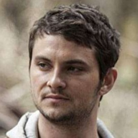
David Allen
David Allen is Mia's older brother and the leader of the group who discovers the Necronomicon. He fights desperately to save Mia from the evil unleashed at the cabin but eventually becomes another victim of the Kandarian Demon.
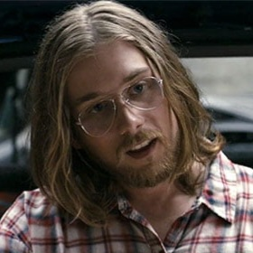
Eric
Eric is the person responsible for awakening the evil in Evil Dead (2013). After reading from the Necronomicon, he unleashes the Kandarian forces and eventually becomes possessed himself.
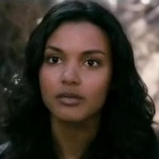
Olivia
Olivia is a nurse who accompanies the group to help Mia through her recovery. After being attacked by the Deadites, she becomes possessed and turns against the others.
Natalie
Natalie is David's girlfriend who joins the group at the cabin to help Mia. After being injured during the Deadite outbreak, she slowly becomes possessed by the Kandarian Demon and becomes another victim of the Necronomicon.

The Possessed Daughter
The Possessed Daughter is one of the earliest victims shown in Evil Dead (2013). After being taken by the Kandarian forces, she demonstrates the intelligence and cruelty of the Deadites before her fate is revealed.
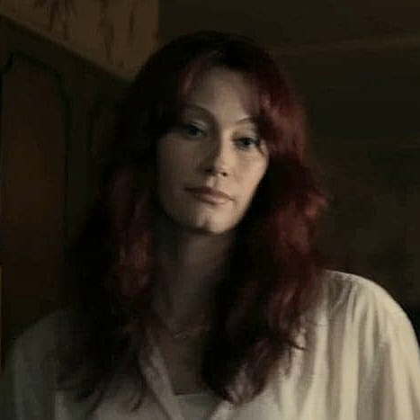
Ellie Bixler
Ellie Bixler is a loving mother whose life is destroyed after the discovery of the Necronomicon beneath her apartment building. After becoming possessed, Ellie transforms into a terrifying Deadite and turns against her own family.
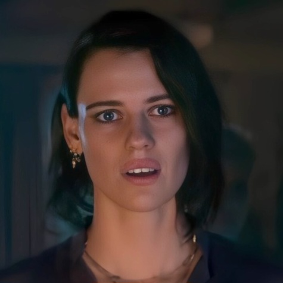
Beth
Beth is Ellie's sister and the main survivor of the events in Evil Dead Rise. After the Deadite outbreak begins, Beth fights to protect Ellie's children while facing the horrors unleashed by the Necronomicon.
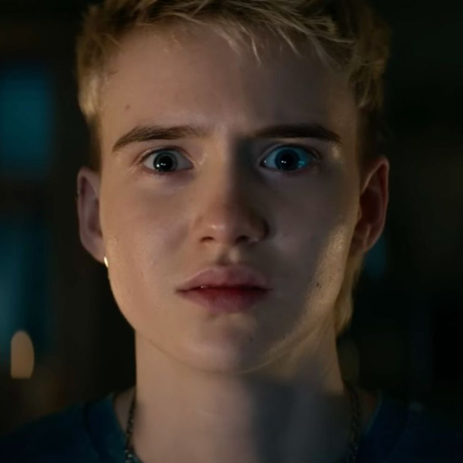
Danny Bixler
Danny is Ellie's son who discovers the Necronomicon and the recordings that awaken the Kandarian forces. His curiosity becomes the cause of the nightmare that follows inside the apartment building.
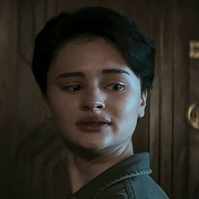
Bridget Bixler
Bridget is Ellie's daughter and Danny's sister. After the Deadite outbreak spreads through the apartment, Bridget becomes another victim of the Kandarian evil.
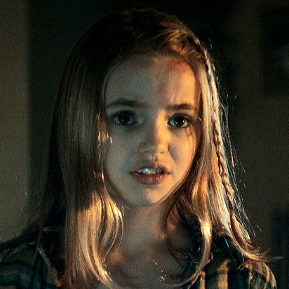
Kassie Bixler
Kassie is Ellie's youngest daughter. Protected by Beth during the Deadite outbreak, Kassie becomes one of the survivors of the terrifying events inside the apartment building.

Gabriel
Gabriel is a resident of the apartment building who becomes one of the victims of Ellie's Deadite rampage. His fate demonstrates how quickly the evil spreads once released.
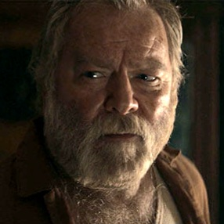
Mr. Fonda
Mr. Fonda is an elderly resident of the apartment building whose shotgun becomes an important weapon during the Deadite outbreak.

Scott
Scott is a resident of the apartment building and the brother of Gabriel. After the Deadite outbreak begins, Scott becomes another victim of the evil unleashed by the Necronomicon.
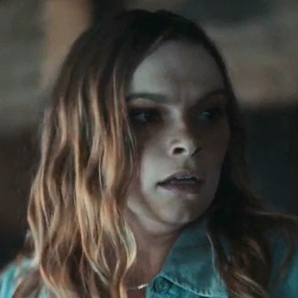
Jessica
Jessica appears in the closing sequence of Evil Dead Rise and returns in Evil Dead Burn. After becoming one of the first victims of the latest Necronomicon outbreak, her fate serves as the bridge between the two stories, carrying the ancient evil into the events of the following film.

Joseph Price
Joseph is one of the central characters in Evil Dead Burn. After becoming involved with the forces unleashed by the Necronomicon, Joseph becomes part of the latest battle against the Deadites.

Alice Price
Alice is one of the survivors caught in the events surrounding the newest Deadite outbreak. She becomes connected to the growing conflict between humanity and the ancient evil released by the Book of the Dead.

Edgar Price
Edgar Price is a character connected to the events of Evil Dead Burn. After encountering the Kandarian forces, Edgar becomes another victim of the Deadite curse.

Thya
Thya is a character involved in the events surrounding Evil Dead Burn. Her encounter with the Deadites shows another horrifying manifestation of the evil unleashed by the Necronomicon.